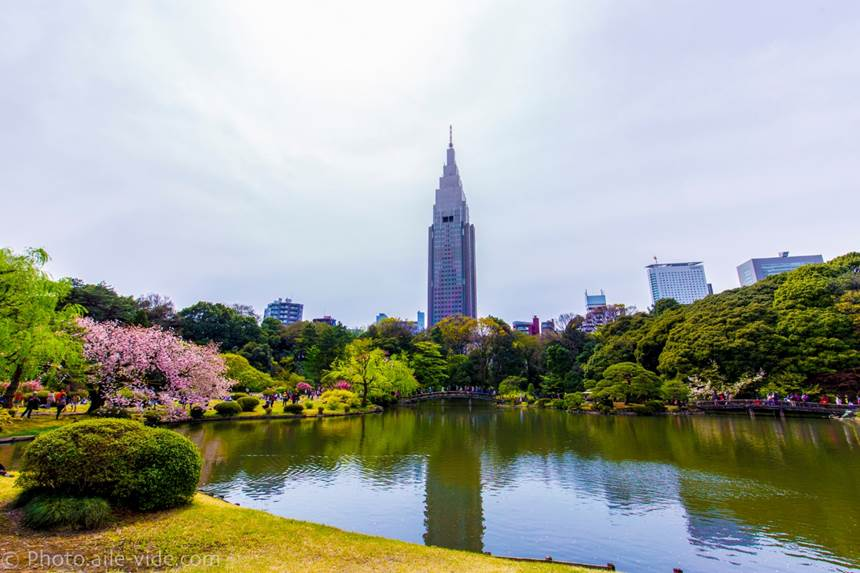

目录
1. 出典：
Ø NTT代代木大厦
2. 剧情：
Ø 其它
1. 出典：
² 1862年7月4日
1862年7月4日，《爱丽丝漫游仙境》的作者路易斯·卡罗，与鲁宾逊·达克华斯（Reverend Robinson Duckworth）及三位女孩于泰晤士河同游。三位女孩当中，其中一位的名字叫爱丽丝·李德尔；她们的父亲正是牛津大学及威斯敏斯特学校的校长亨利·乔治·李德尔（Henry George Liddell）。
他们由牛津附近的Folly Bridge开始，划船到五哩外一条名叫Godstow的村庄。途中，他们为了消磨时间，道奇森就在船上向三位女孩讲了一个应她们要求“越荒诞越好”的幻想冒险故事，而故事的主角正好就是他最疼爱的三姊妹之中的二女儿爱丽丝。
三位女孩都很喜欢这个奇妙的故事，事后同船的友人，以及与故事主角同名的爱丽丝更希望道奇森能把故事写下来。道奇森虽然当晚就把故事记录下来，但之后又拖延超过二年，增补新情节与多首诗，才终于完成该作品。他于1864年11月26日把手写原稿连同亲手绘画的插图，一并送给爱丽丝·李德尔，这就是《爱丽丝漫游仙境》的雏形。
Figure 1. 牛津Folly Bridge附近景观
NTT DoCoMo代代木大厦是位于日本东京都涩谷区千駄谷的摩天大楼，由日本行动通讯公司NTT DoCoMo兴建及使用，1997年12月动工、2000年9月竣工。按照屋顶高度计算，该建筑是东京都第四高楼（240米），仅次于中城大厦、虎之门之丘与东京都厅舍；若按照含天线的总高度计算，它是东京都最高的摩天大楼（272米）。
在章节Nagatsuki中又被称为时钟塔（Clock Tower）。

Figure 2. 在御苑公园拍摄的高耸的时钟塔
2. 剧情：
灰流推着轮椅，带着病弱的伽子，一块到御苑公园散步。
 伽子的家在新宿御苑后面，伽子邀请灰流每天来玩，但成人进入新宿御苑需要买200日元的门票，灰流付不起。这里说明灰流是真的穷……
伽子的家在新宿御苑后面，伽子邀请灰流每天来玩，但成人进入新宿御苑需要买200日元的门票，灰流付不起。这里说明灰流是真的穷……
 从各种小动作和对话中，可以看出伽子对灰流应该是抱有恋爱的心情。
从各种小动作和对话中，可以看出伽子对灰流应该是抱有恋爱的心情。